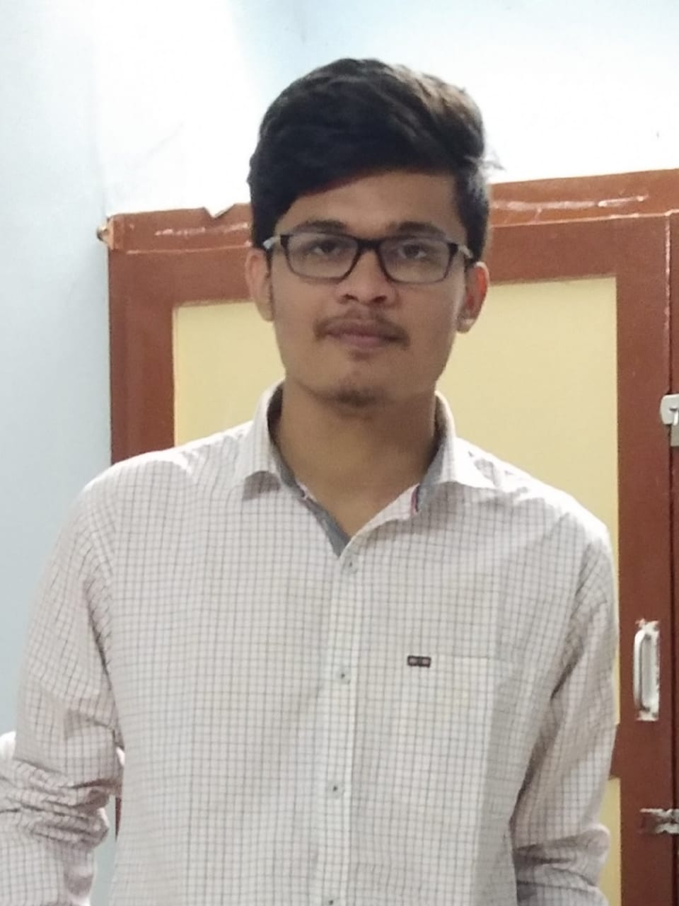

|  |
Chavda MaharshivishnuB.Tech in Electronics and Communications NIT,Trichy Higher Secondary Education (CBSE) at ShivJyoti Sr. Secondary School,Rathkankara primary education at ETS,Nadiad |
| c,c++ | ⭐⭐⭐⭐⭐ | Frontend : HTML,CSS,Javascript | ⭐⭐⭐⭐⭐ |
| Backend : node.js,express.js,mangoose | ⭐⭐⭐⭐⭐ | Microsoft Word | ⭐⭐⭐⭐⭐ |
| Microsoft Excel | ⭐⭐⭐⭐⭐ | Microsoft PowerPoint | ⭐⭐⭐⭐⭐ |
| Date | Work |
|---|---|
| Aug,2019 - Present | Deputy Manager, Infotainment, Pragyan |
| July,2019 - November,2019 | Deputy Manager,Aayam |
| Feb 2019 - Sep 2019 | Coordinator,Festember |